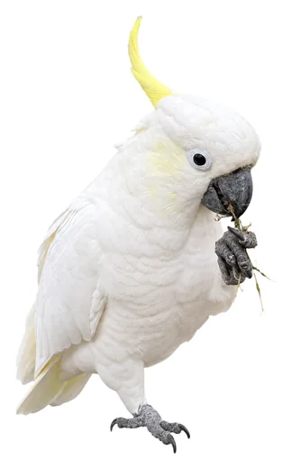

鸣迹日报
全世界11064种鸟
全部画成了贴纸
全部画成了贴纸
AI照真实照片画，独立审核打分，贴纸和数据全部开源

图：葵花鹦鹉，对照真实照片画
本报讯 这套贴纸覆盖IOC名录全部现生鸟种，每种一张，透明底，白边。每张都交给一个独立审核员打分，八十分算过。
要闻导读
▶ 怎么画 第3版
▶ 审核员也被审 第4版
▶ 怎么画 第3版
▶ 审核员也被审 第4版
深度 · 审核员也要被审
审过的270只
换一个模型再审一遍
换一个模型再审一遍
复核发生在第二轮。同一批贴纸、同一份标准，交给另一个模型从头审。两边判断不一致的，全部回到人工对照照片。
88:23
甲过 乙不过乙过 甲不过
分歧集中在同一类问题：眼睛、脚趾、尾羽的长短。于是标准里每一条都写成可以对照照片核对的句子。
图解 · 画对了应该是这样